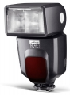

50 AF-1 Digital 闪光灯，最大闪光指数为50，灯头变焦范围为24-105mm（使用广角扩散板后可覆盖12mm焦段）。
前后买了2个 一个宾得口48 一个佳能口50 宾得口那个是灯管坏了 保修期内没收钱 第2个佳能口寄过去20天都没给我说什么问题 说没有配件 20天后给我说按键板坏了 材料费600 新灯才1400！！直接说不修了
如果灯正常 堪用吧
操作不便
最好不要买！我买了保修一年！刚过一年就坏掉！一年内我根本就没怎么用过！维修要900多！我操！我不修也要收150！去他妹！
垃圾！
售后超级烂！坏了没地方修！维修中心超级坑人！
比430ex和sb600都好 更适合佳能
灯中蔡司 性价比高 没有沦为国产货 色温准 功率稍大
做工不错但用料不佳 副厂都有兼容性
好东西，1734港币在香港购入，非常超值！！！！！！！！！！！！！！！！！！！！！！
1、50的大功率 2、12mm广角覆盖 3、色温和ttl精确 4、价格合理
1、做工还可以，但感觉不如原厂430结实
性价比非常不错的灯，输出光量同档次最高，功能齐全，色温准，我买的是港行的，1650包邮，同比佳能的430EX二代要强很多。
色温准，回电快，功能齐全，性价比高。
质地似乎没有佳能原厂的好，但还要时间来检验；按键少，所以很多功能需要组合键来完成，操作很不方便。